Сергей Юдаков
Санкт-Петербург · зубной техник · основатель dpb
Смотреть курс → +7 (951) 435-40-99
+7 (951) 435-40-99Идёт запись · Барнаул
Практический курс Юрия Гомжина — от диагностики и выбора материала до препарирования, оттиска и адгезивной фиксации. Последовательная работа по логике реального клинического протокола.
Передайте задачу команде dpb и выстройте работу над случаем как единым проектом.
Открыть лабораторию →02 / ОбучениеНайдите курс под свою специальность, уровень и профессиональную задачу.
Смотреть программы →03 / Материалы и технологииПодберите материалы и оборудование, проверьте совместимость и закажите через dpb.
Смотреть решения →
Дентальное Проектное Бюро объединяет обучение, лабораторию и технологии в одну рабочую систему.
Специалисты подключаются к проекту там, где это действительно нужно, а решения принимаются с учётом общего результата.
В основе подхода dpb — точная постановка задачи, согласованная работа команды и осознанный выбор технологий.
Принципы, команда и история dpb →Материалы, оборудование и цифровые решения партнёров dpb используются в профессиональной практике и доступны для заказа через dpb.
16 профессиональных брендов-партнёров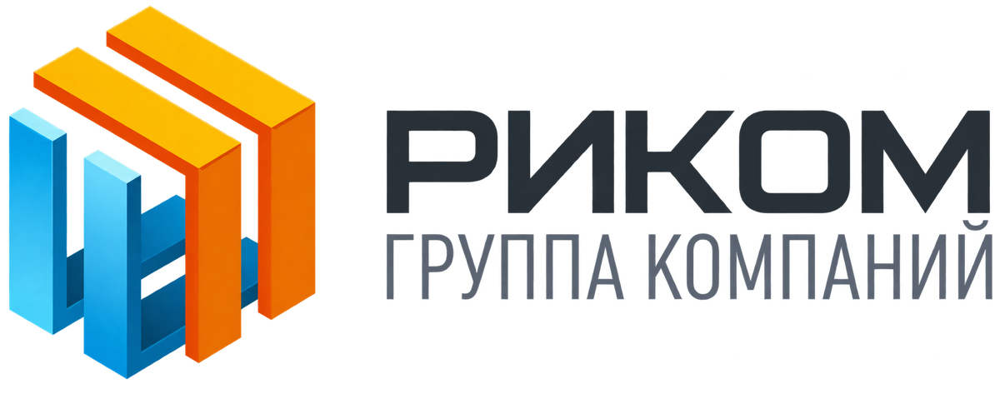

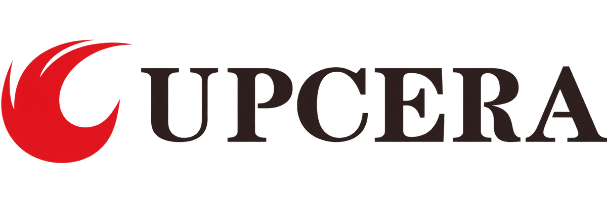
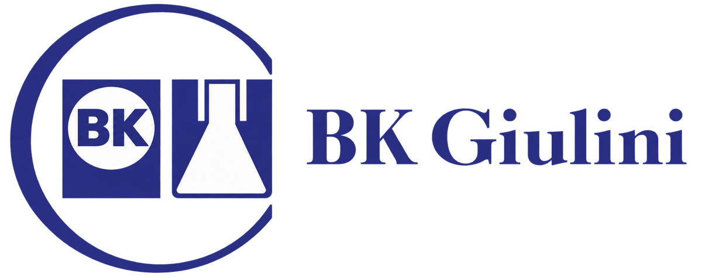
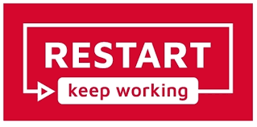
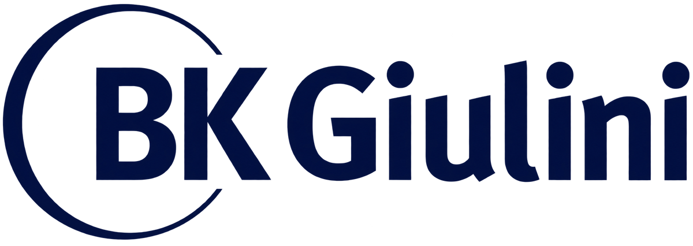
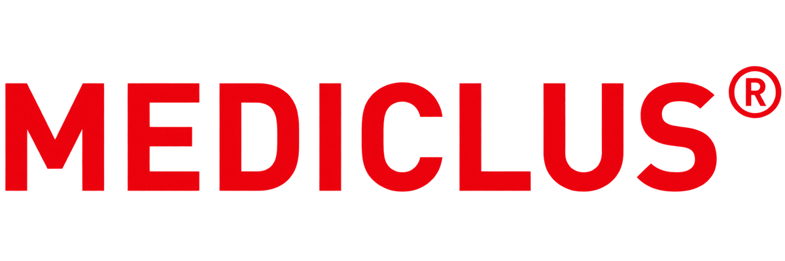
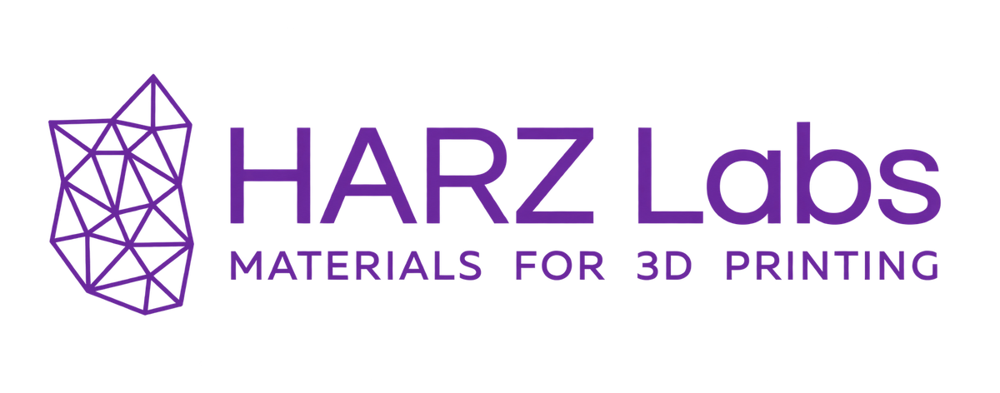
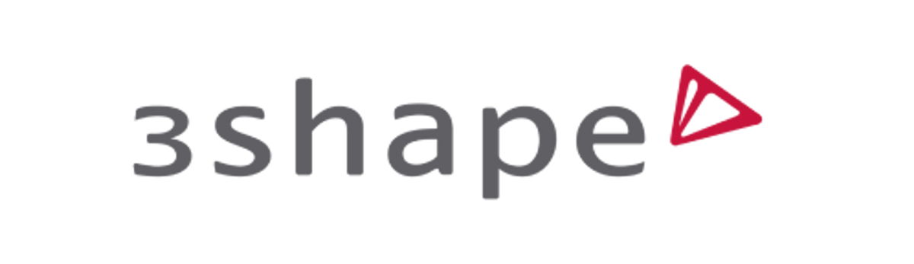
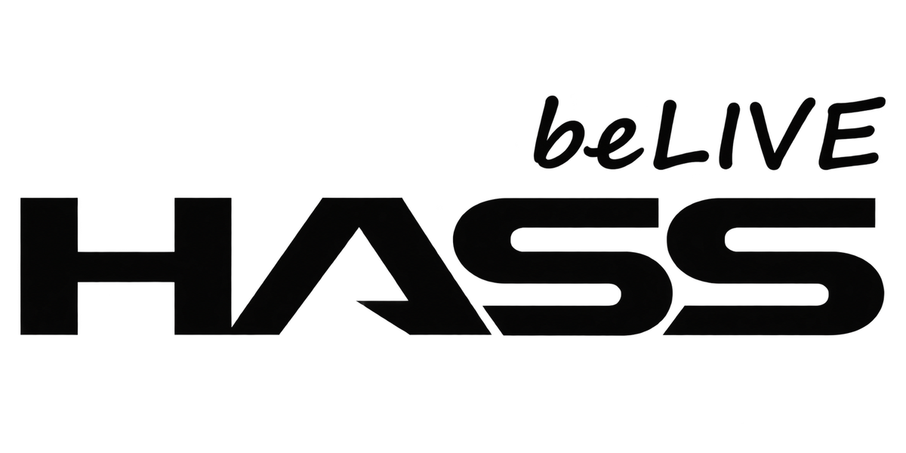
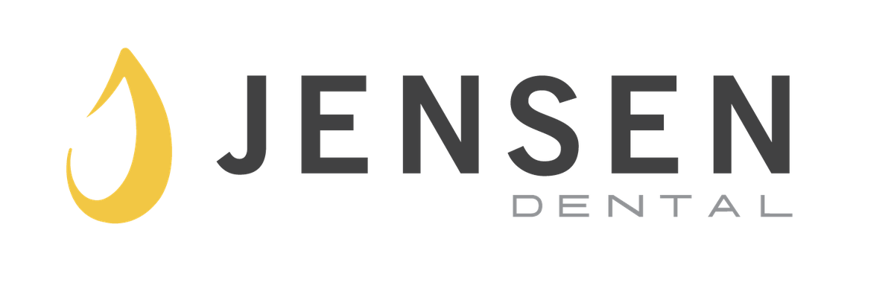
Санкт-Петербург · зубной техник · основатель dpb
Смотреть курс →
Санкт-Петербург · стоматолог-ортопед
Смотреть курс →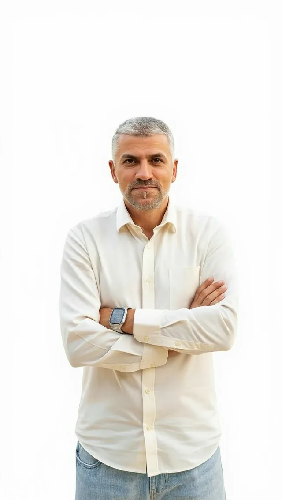
Санкт-Петербург · зубной техник
Смотреть лекцию →
29–30 августа
6 сентября
dpb помогает подобрать профессиональные материалы и технологии под конкретную задачу — от выбора решения до оформления заказа.
Материалы, расходники и оборудование профессиональных брендов-партнёров.
Смотреть решения →Не уверены в совместимости? Координатор поможет подобрать решение под вашу задачу.
Выберите нужные позиции и оформите заказ через координатора dpb.
В лаборатории dpb каждый случай ведут как единый проект. Этапы работы согласуются между собой, чтобы результат был точным не только на модели, но и в клинике.
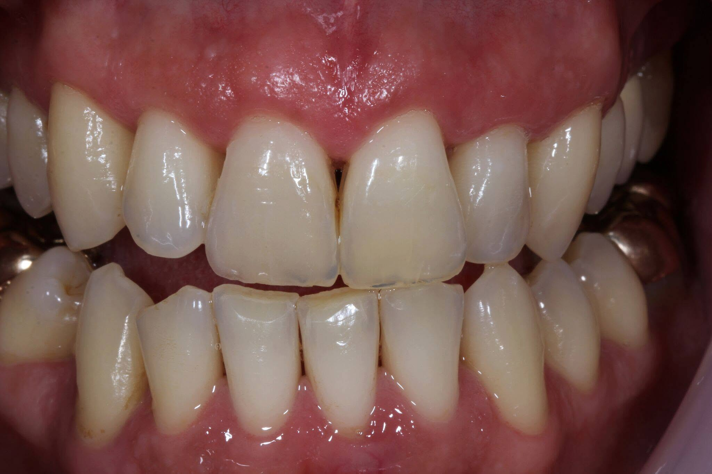
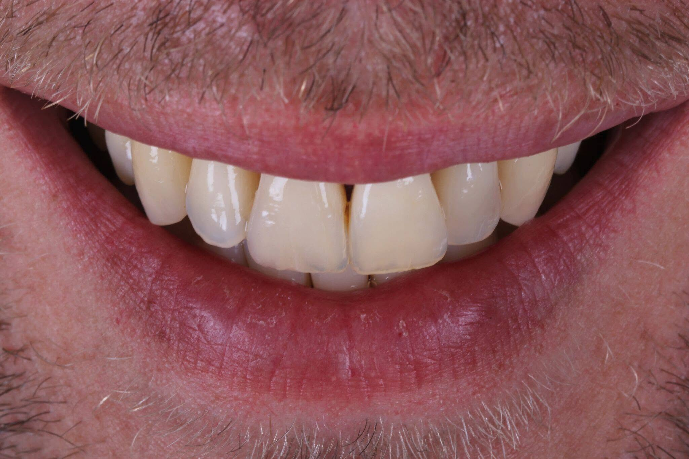
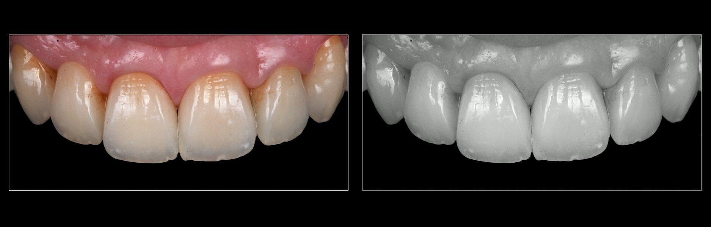
Фрагменты мероприятий, практика и рабочие моменты участников.


Реальные впечатления после обучения в dpb.
«Понравилось, что материал не существует отдельно от практики. Сначала разбираешь логику, затем видишь работу спикера и сразу можешь попробовать сам. После курса многие этапы стали гораздо понятнее».
“«Для меня самым ценным был разбор мелочей, о которых обычно узнаёшь только через собственные ошибки. Можно было остановиться на сложном моменте, задать вопрос и сразу понять, почему один подход работает лучше другого».
“«Хороший баланс между теорией и практикой. Не было ощущения, что тебе просто показывают готовый результат — объясняли саму логику работы и давали возможность пройти ключевые этапы самостоятельно».
“На странице каждой программы указаны аудитория, уровень, формат и содержание. Если сомневаетесь, координатор dpb поможет выбрать подходящий вариант.
Да. Для каждой программы отдельно указано, какой уровень подготовки необходим и кому она подходит.
Да. dpb работает с профессиональными брендами и помогает подобрать и заказать материалы, расходники и оборудование.
Да. Передайте задачу команде dpb — специалисты уточнят необходимые данные и предложат дальнейший формат работы.
Очные мероприятия dpb проходят в Барнауле. Точный адрес и место проведения указан на странице конкретного события.
Новые программы публикуются в разделе «События» и социальных сетях dpb.
Позвоните, напишите в удобный мессенджер или оставьте заявку через форму на сайте.
Обучение, лаборатория или материалы — координатор поможет сориентироваться и ответит на вопросы.
+7 (951) 435-40-99dpb.center@dpb.centerTelegram · WhatsApp · VK
Барнаул · Сиреневая, 31